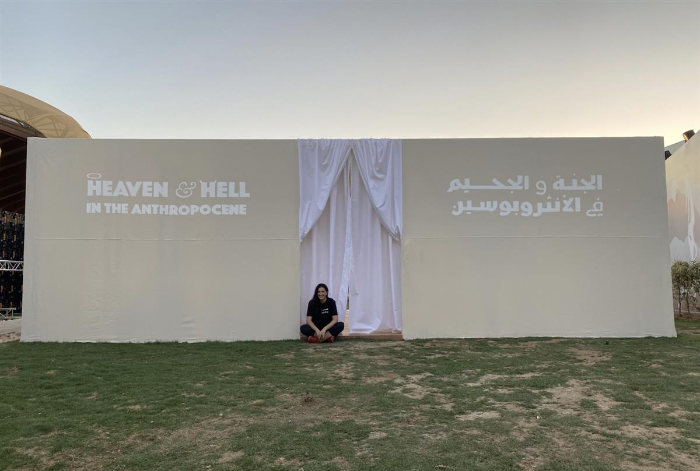

Bodies Joined by a Molecule of Air by Invisible Flock arts studio and Jon Bausor. Photo by Fayez Nureldine/AFP via Getty Images.
At COP27, Artists Are Installing Their Work to Urge Heads of State to Act on Climate Change
One project embodies heaven and hell. Another comprises miniature bottles filled with human tears and algae.
Artnet News, November 10, 2022
A 2011 study found that people’s attitudes toward climate change differ depending on the temperatures they are experiencing at the time—that those sitting in, say, a hot office are more likely to consider global warming a critical threat.
Now, at the 2022 United Nations Climate Change Conference (COP27) in Sharm El-Sheikh, Egypt, a new art installation literalizes this phenomenon. The idea, according to the project’s description, is to “make people feel like stakeholders in our collective future and to drive action towards making change possible.”
The artwork, called Heaven & Hell in the Anthropocene, comprises a pair of identical-looking rooms. Inside, visitors are confronted with drastically different sights, sounds, temperatures, and smells, depending on which of the two spaces they opted to enter. One room represents heaven, the other hell.
“For many, the perception of eternity is divided between the two poles of heaven in hell,” explained artist Bahia Shehab, who conceived the installation in collaboration with the creative studio Fine Acts.

“Living in the Anthropocene–the most recent period in Earth’s history when human activity started to have a significant impact on the planet’s climate and ecosystems—we need to ask ourselves, what’s our eternity really going to look like?” Shehab went on. “Are we going to heaven, or are we going to hell?”
Shehab’s work will remain on view at the COP 27 “Green Zone” pavilion through the end of the expo on November 18. After that, Fine Acts will publish an online manual for others to recreate Heaven & Hell in the Anthropocene elsewhere under an open license.
The project is one of several produced to accompany the conference, as artists leverage their work in an effort to urge action from the nearly 100 heads of state in attendance—without gluing themselves to famous paintings, that is.
PLEASE CLICK THE ABOVE IMAGE FOR A LINK TO INSTAGRAM
At the World Health Organization’s (WHO) Health Pavillion, a 21-foot-long recycled aluminum sculpture cast from fallen branches from Lebanon resembles a pair of lungs. It resonates at the frequency of the human body, 7.5 hertz, and pulsates when touched.
The artwork, co-designed by creative director Jon Bausor and the Yorkshire-based art studio Invisible Flock, draws a plane parallel between the livelihood of the human body with that of the planet.
“We are the environment and the environment is us—we can’t be separated,” Invisible Flock artist Victoria Pratt told the Guardian of the sculpture, called Bodies Joined by a Molecule of Air.
Elsewhere on view at the WHO pavilion are additional art projects selected by Invisible Flock, including How to Make an Ocean, an installation of 12 marble-sized bottles filled with human tears and algae from the North Sea. Accompanying each bottle is a text explaining when the tears were cried and why.
“Can environmental health be an indicator of our own health?” reads one text by the artist behind the work, Kasia Molga.
SOURCE: ARTNET NEWS